New Analysis window, introduced in version 5.50 (initially in 5.41.0 BETA), brings the following improvements over the old Automatic Analysis:
You can open New Analysis window in a number of ways:
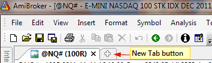
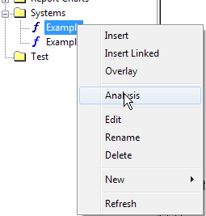
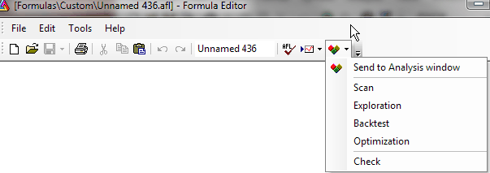
The user interface for the New Analysis window is functionally similar to the old automatic analysis and looks as follows:
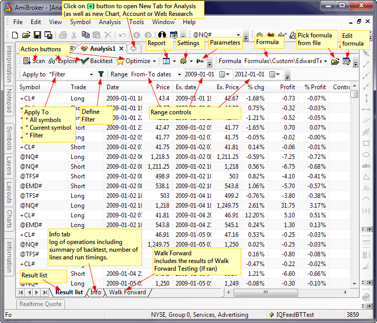
Basic operations
Selecting the symbol to apply analysis to.
Click on the drop-down arrow in
the Apply to combo box to select the
operation mode: All symbols / Current symbol / Filter
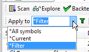
Defining a Filter
If Apply To is set to Filter, the Analysis window
will be run on the symbols that match the filtering criteria, which are definable
in the Filter Settings window. To open the Filter Settings window, press the 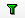
Defining the Date/Time Range
Click on the drop-down arrow in the Range combo box to select the range selection mode: All symbols / N recent bar(s) / N recent day(s) / From-To dates
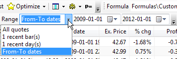
The 'N' can represent any number. For example, to define a range of 15 recent days, select 1 recent day(s) first, and then type 15 and press ENTER. You will see the text automatically update to 15 recent day(s). Remember, you don't need to type the whole thing; just a number is sufficient.
Viewing Reports / Running the Report Explorer
To view the report from the last backtest, click on the Report button. To run the Report Explorer, use the Report button's drop-down menu as shown below
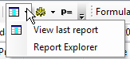
Changing Settings / Options
To change backtester settings, click on the Settings button. To turn on or off additional options like:
click on the drop-down arrow on the Settings button to display the menu as shown below
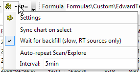
Auto-repeat interval can be entered in the Interval field. Note that plain numbers (like 5) represent minutes. To get seconds, you need to enter 5sec or 5s and press ENTER
Running a Walk-Forward Test
Click on the arrow on the Optimize button to display the menu as shown below and select Walk-Forward
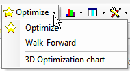
The results of the Walk-Forward test will be displayed in the Walk Forward tab (see bottom of the Analysis window).
Displaying the 3D Optimization Chart
To display the 3D Optimization Chart, first run an optimization that has exactly two optimization parameters, and then click on the arrow on the Optimize button to display the menu as shown above and select 3D Optimization Chart.
Displaying Equity Charts
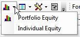
Equity charts (portfolio and individual) can be added to chart windows using Portfolio Equity / Individual Equity options as shown above.
Exporting and Importing the Result List
To export data to a CSV file or an HTML file, use the File -> Export HTML/CSV menu (from the main window). To import a previously exported HTML file, use File -> Import HTML... as shown in the picture below. Note that these menu items appear only if you have the New Analysis window active.
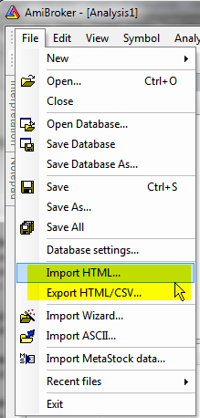
In addition to comprehensive batch capabilities, AmiBroker 6.40 brings the ability to run sequences of actions within the Analysis window alone.
This new feature is not intended to replace batches, but to augment the available choices and allow "quick hacking" so you can run sequences directly in the Analysis window without resorting to using full-fledged batches.
There is a new #pragma sequence(list of actions) statement that will define a sequence of actions to be performed, and a toolbar button "Run Sequence" to allow you to run a sequence of actions via a single click.
This allows you to, say, create composites and later run an exploration that uses those composites, all via a single click on the "Run Sequence" button
The code that uses #pragma sequence looks like this:
// the statement below defines sequence of actions
#pragma sequence(scan,explore)
if( Status("action")
== actionScan )
{
AddToComposite( .. );
StaticVarAdd(...);
_exit(); // quick exit in
scan mode
}
Filter = ...
AddColumn( ... ); // exploration
code that can use composites / static vars created in scan step